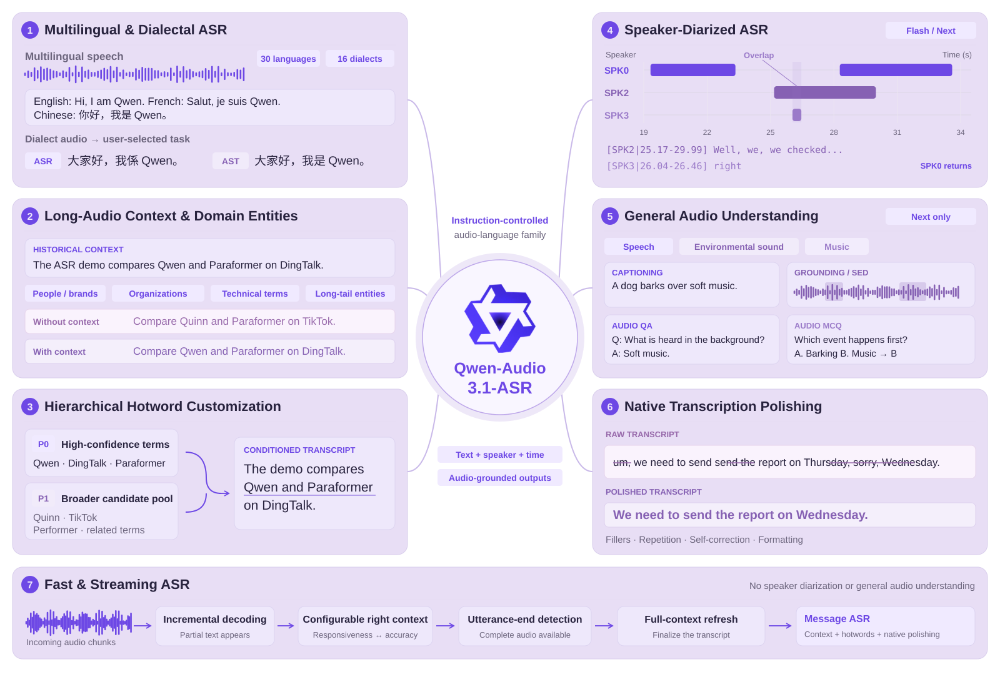
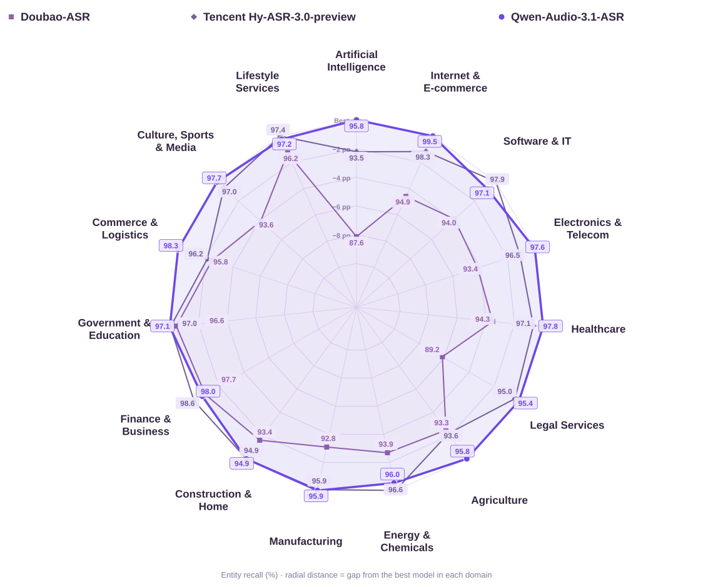

宏平均 CER · 16 个内部方言集
01 / 08MULTILINGUAL ASR
Qwen-Audio-3.1-ASR
30 种语言，
同一个世界。
让不同语言的声音，以原本的文字被听见。
探索多语言音频地图标记为音频样例代表地点，不代表语言使用范围。
QWEN-AUDIO-3.1-ASR / 项目概览
从听清，到听懂。
统一的音频语言模型家族，融合语音识别、分角色转写与泛音频理解。

01
多语种与方言
语音 → 原文转写 / 普通话译文
↗02流式与语音输入
连续语音 → 增量文字
↗03上下文与热词
语音 + 提示 → 准确的专有词
↗04原生转写润色
口语表达 → 易读文字
↗05分角色语音识别
多人对话 → 角色 / 内容 / 时间
↗06泛音频理解
声音 + 指令 → 描述与推理
↗宏平均错误率 · Common Voice 15
宏平均 cpWER · Qwen Next · 4 个测试集
3.1阅读技术报告 ↗
↗
INSIDE THE MODEL
统一架构，按任务输出。
音频编码器与适配器将声音接入指令控制解码器。语言提示、历史文本与热词控制转写；任务指令选择分角色转写或音频理解输出。
音频 + 任务指令 + 可选上下文 → 对应任务输出
图 3 · 指令控制的解码工作流。
01
MULTILINGUAL & DIALECTAL ASR / AST
语言不同，同样听见。
支持 30 种语言和 16 种中文方言。ASR 保留说话内容的原语言形式；方言 AST 将方言语音转译为普通话。选择地图上的地点即可试听。
输入 · 语音 → 输出 · 原语言转写 / 普通话译文
30supported languages
16dialectal varieties
Select a location
Japanese · Japan
日本語
Choose a marker on the map or a name below.
Flexible language prompting
Combine target languages at runtime.
language_hints = ["zh", "ja", "en"]
Browse all 30 supported languages
地图表示音频样例的代表地点，不等于语言的全部分布范围。试听为录音示例，非在线推理。
查看对应评测 ↗02
STREAMING & MESSAGE ASR
边说，边出字。
流式 ASR 持续返回增量文字；Message ASR 面向语音输入，兼顾快速出字与句尾整句刷新。
输入 · 连续语音 → 输出 · 增量文字 + 完整句子
Interactive streaming playbackIndustry Voice InputvsQwen-Audio-3.1-ASR
Beijing → Hangzhou travel request调整音色 · 保留原始对比时序
0:00/0:18
INDUSTRY VOICE INPUTQWEN-AUDIO-3.1-ASR
录制对比演示，保留原音频与出字时序。下方延迟结果来自独立评测。
表 6 · Qwen-Audio-3.1-ASR-Flash-Message 对比 Doubao Streaming ASR 2.0。越低越好；实测延迟与算法延迟不是同一指标。
评测设置 · 10 路并发音频流；Qwen 使用 NVIDIA H100 自部署服务，豆包通过 API 测试；假设两端网络延迟相当。
查看对应评测 ↗03
LONG-AUDIO CONTEXT & HIERARCHICAL HOTWORDS
让专有词，有据可循。
历史转写为歧义词提供前文线索；P0 / P1 热词分别提供高置信优先词与更广的候选集合。行业评测则衡量专有实体是否被准确识别。
输入 · 语音 + 历史文本 / 热词 → 输出 · 更准确的转写
04
NATIVE TRANSCRIPTION POLISHING
说完，即是易读的文字。
在识别过程中直接处理语气词、重复表达、明确的自我修正与格式。原生润色无需额外调用改写模型。
输入 · 自然口语 → 输出 · 单次识别生成更易读的文字
Qwen-Audio-3.1-ASR音画同步演示
原始转写
原生润色
录音示例 · 同步对照原始转写与原生润色文字。
中英文润色前后示例 · 图 15↗
05
SPEAKER-DIARIZED ASR / FLASH & NEXT
不止转写，更还原对话。
为每段语音标注说话人和时间区间，保留交替与重叠发言。试听五人会议，点击任意文字片段即可定位回听。
输入 · 多人对话 → 输出 · 文字 + 说话人 + 时间戳
Consistent speaker labelsSegment-level timestampsOverlapping speech on separate tracks
查看对应评测 ↗06
GENERAL AUDIO UNDERSTANDING / NEXT
听到声音，也理解发生了什么。
不仅理解人声，也能描述环境声与音乐、定位事件发生的时间，并回答基于音频的问题。下方提供七类真实音频示例。
输入 · 音频 + 指令 → 输出 · 描述 / 时间区间 / 问答
查看对应评测 ↗07
EVALUATION / SPEECH & SOUND
从语音到声音，用结果验证。
集中查看语音识别、角色归属与音频理解的表现。选择能力，查看对应图表、完整数据与评测设置。
方言识别与转译，表现如何？
切换三组评测查看具体表现。CER 为字错误率，越低越好；语义句准确率则越高越好。
中英文公开 ASR 基准 · 表 2↗
多语种识别基准 · 表 3↗
识别内容，也准确区分说话人。
四个评测集，三项指标。分开查看说话人、转写内容与角色归属的误差，均越低越好。
分角色识别完整结果 · 表 7↗
DER 与 cpWER 均越低越好。Flash-Next 在五项指标最低，Flash 在另外三项最低。各列最优值加粗。
泛音频理解完整结果 · 表 8↗

可读性提升，也如实呈现取舍。
可读性从 2.53 提升到 3.44；忠实度为 3.44，原始转写为 3.51。两项指标同时展示。
语音输入中的行业实体召回 · 图 16↗
08
MODEL FAMILY / DEPLOYMENT PROFILES
Choose the capabilities you need.
Five profiles, different capability boundaries. Speaker diarization and general audio understanding are not streaming features.
Table 1 · Deployment variants and capability scope. See service documentation for availability and API details.
↗
MODEL EXPERIENCE / INTEGRATION REFERENCE
选择适合场景的接入方式。
参考百炼官方语音识别 API 接入指南。具体模型标识与可用能力，以服务文档和控制台为准。